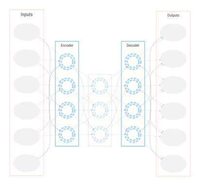

8 More ML
We’ve covered how to do some modeling for standard data settings and modeling goals, but there are many other aspects of ML that we haven’t covered, and honestly, you just can’t cover everything. ML is always evolving, progressing, and branching out, and covers every data domain, which is what makes it so fun! Here we’ll briefly discuss some of the other aspects of ML that you’ll want to be aware of as you continue your journey.
8.1 Key Ideas
Some things to keep in mind when thinking about ML as we wrap up our discussion:
- There is practically no modeling or data domain where ML cannot potentially be applied.
- Other widely used techniques include unsupervised settings, reinforcement learning, computer vision, natural language processing, and more generally, artificial intelligence.
- Tabular data has historically been the most common data setting for modeling by far, but this may not always be the case moving forward.
8.1.1 Why this matters
It’s very important to know just how unlimited the modeling universe is, but also how there is a tie that binds. Even when we get into other data situations and complex models, we can always fall back on the core approaches we’ve already seen and know well at this point, and know that those ideas can potentially be applied in any modeling situation.
8.1.2 Good to know
For the stuff in this chapter, a basic idea of modeling and machine learning would be enough.
8.2 Unsupervised Learning
All the models considered thus far would fall under the name of supervised learning. That is, we have a target variable that we are trying to predict, and we use the data to train a model to predict the target. However, there are settings in which we do not have a target variable, or we do not have a target variable for all of the data. In these cases, we can still use what’s often referred to as unsupervised learning to learn about the data. Unsupervised learning is a type of machine learning that involves training a model without an explicit target variable in the sense that we’ve seen. But to be clear, a model is still definitely there! Unsupervised learning attempts learn patterns in the data in a general sense, and can be used in a wide range of applications, including clustering, anomaly detection, and dimensionality reduction, though it’s best to think of these as different flavors of a more general approach.
Traditionally, one of the more common applications of unsupervised learning falls under the heading of dimension reduction, or data compression, such that we reduce features to a smaller latent, or hidden, or unobserved, subset that accounts for most of the (co-)variance of the larger set. Alternatively, we reduce the rows to a small number of hidden, or unobserved, clusters. For example, we start with 100 features and reduce them to 10 features that still account for most of what’s important in the original set, or we classify each observation as belong to 2-3 clusters. Either way, the primary goal is to reduce the dimensionality of the data, not predict an explicit target.
Classical methods in this domain include principal components analysis (PCA), singular value decomposition (SVD), and factor analysis, which are geared toward reducing column dimensions, as well as cluster methods such as k-means and hierarchical clustering for reducing observations into clusters. Sometimes these methods are often used as preprocessing steps for supervised learning problems, or as a part of exploratory data analysis, but often they are end in themselves. Most of us our familiar with recommender systems, whether via Netflix or Amazon, which suggest products or movies, and we’re all now becoming extremely familiar with text analysis methods via chat bots. While the underlying models are notably more complex these days, they actually just started off as SVD (recommender systems) or a form of factor analysis (text analysis via latent semantic analysis/latent dirichlet allocation). Having a conceptual understanding of the simpler methods can aid in understanding the more complex ones.
8.2.1 Connections
8.2.1.1 Clusters are categorical latent features
It turns out that whether we are clustering rows or reducing columns we’re actually just using different methods to reduce the features. For methods like PCA and factor analysis, we’re reducing the columns to a smaller set of numeric features. For example, we might take answers to dozens of questions of a personality inventory, and reduce them to five key features that represent general aspects of personality. These new features are on their own scale, often standardized, but still reflect the variability originally seen in the original items to some extent1. However, think about a case where we just reduce the features to a single variable, and that variable was categorical. Now you have cluster analysis! You can discretize anything, e.g. from a nicely continuous feature to a coarse couple of categories, and this goes for latent variables as well as those we actually see in our data. For example, if we do a factor analysis with one latent feature, we could either convert it to a probability of some class with an appropriate transformation, or just say that scores higher than some cutoff are in cluster A and the others are in cluster B. Indeed, there is a whole class of clustering models called mixture models that do just that, i.e. estimate the latent probability of class membership. The point is that the underlying approach can be conceptually similar, and the bigger difference is how we interpret the results.
8.2.1.2 PCA as a neural network
Consider the following neural network, called an autoencoder. The goal of an autoencoder is to learn a representation of the data that is smaller than the original data, but can be used to reconstruct the original data. It’s trained by minimizing the error between the original data and the reconstructed data. The autoencoder is a special case of a neural network used as a component of many larger architectures, but can be used for dimension reduction in and of itself.

Consider the following setup for such a situation:
- Single hidden layer
- Number of hidden nodes = number of inputs
- Linear activation function
An autoencoder in this case would be equivalent to PCA. In this approach, PCA perfectly reconstructs the original data when considering all components, and so the error would be zero. But that doesn’t give us any dimension reduction, so we often only retain a small number of components that capture the data variance by some arbitrary amount.
Neural networks however are not bound to linear activation functions, the size of the inputs or even a single layer, and so they provide a much more flexible approach that can compress the data at a certain layer, but still have very good reconstruction error. Typical autoencoders, would have multiple layers with notably more nodes than inputs. It’s not as easily interpretable as typical factor analytic techniques, and we still have to sort out the architecture. However, it’s a good example of how the same underlying approach can be used for different purposes.

TODO: find a way to make graphviz allow for labels/backgrounds on subgraphs with same rank
8.2.1.3 Latent Linear Models
Another thing to be aware of is that factor analytic techniques can be thought of latent linear models. Here is a factor analysis as a latent linear model. The ‘targets’ are the observed features, and we predict each one by some linear combination of latent variables.
\[ \begin{aligned} x_1 &= \beta_{11} h_1 + \beta_{12} h_2 + \beta_{13} h_3 + \beta_{14} h_4 + \epsilon_1 \\ x_2 &= \beta_{21} h_1 + \beta_{22} h_2 + \beta_{23} h_3 + \beta_{24} h_4 + \epsilon_2 \\ x_3 &= \beta_{31} h_1 + \beta_{32} h_2 + \beta_{33} h_3 + \beta_{34} h_4 + \epsilon_3 \\ \end{aligned} \]
In this scenario, the \(h\) are estimated latent variables, and \(\beta\) are the coefficients, which in some contexts are called loadings. The \(\epsilon\) are the residuals, which are assumed to be independent and normally distributed as with a standard linear model. The \(\beta\) are usually estimated by maximum likelihood, and the model is fit by iterative methods. The latent variables are not observed, but are to be estimated as part of the modeling process, or are derived in post-processing depending on the estimation approach, and typically restricted to have a mean of zero, and possibly standard deviation of 1. The number of latent variables we use is a hyperparameter, and so can be determined by the usual means2. To tie some more common models together:
- PCA is a factor analysis with no (residual) variance, and the latent variables are orthogonal (independent).
- Probabilisitic PCA is a factor analysis with constant residual variance.
- Factor analysis is a factor analysis with varying residual variance.
- Independent component analysis is a factor analysis that does not assume an underlying gaussian data generating process.
- Non-negative matrix factorization and latent dirichlet allocation are factor analyses applied to counts (think poisson and multinomial regression).
8.2.2 Other classical unsupervised learning techniques
There are several techniques that are used to visualize high-dimensional data in a low-dimensional spaces, hopefully to identify clusters or aid with interpretability. These include methods like multidimensional scaling, t-SNE, and (H)DBSCAN. These are often used as a part of exploratory data analysis.
Cluster analysis generally speaking has a very long history and you’ll see many different approaches, including hierarchical clustering algorithms (agglomerative, divisive), k-means, and more. Distance matrices are often the first step for these clustering approaches, and there are many ways to calculate distances between observations. Converesely, adjacency matrices, which focus on similarity of observations rather than differences, are often used for graph-based approaches, which may also used for clustering.
Anomaly/outlier detection is an approach to find data points of interest. This is often done by looking for data points that are far from the rest of the data, or that are not well explained by the model. This is often used for fraud detection, network intrusion detection, and more. Standard clustering or modeling techniques might be used to identify outliers, or specialized techniques might be used.

Network analysis is a type of unsupervised learning that involves analyzing the relationships between entities. It is a graph-based approach that involves identifying nodes (e.g. people) and edges (e.g. do they know each other) in a network. It is used in a wide range of applications, like identifying communities within a network, or to see how they evolve over time. It is also used to identify relationships between entities, such as people, products, or documents. One might be interested in such things as which nodes that have the most connections, or the general ‘connectedness’ of a network. Network analysis or similar graphical models typically have their own clustering techniques that are based on the edge (connection) weights between individuals, such as modularity, or the number of edges between individuals, such as k-clique.
In short, there’s a lot out there that might fall under the umbrella of unsupervised learning, but even when you don’t think you have a target variable, you can still understand or frame these as models similar or even identically to how we have been. One should be less hung up on trying to distinguish modeling approaches with somewhat arbitrary labels, and focus more on what their modeling goal is and how best to achieve it!
8.3 Reinforcement Learning
PLACEHOLDER IMAGE

Reinforcement learning (RL) is a type of modeling approach that involves training an ‘agent’ to make decisions in an environment. The agent learns by receiving feedback in the form of rewards or punishments for its actions. The goal of the agent is to maximize its rewards over time by learning which actions lead to positive or negative outcomes.
In reinforcement learning, the agent interacts with the environment by taking actions and receiving feedback in the form of rewards or punishments. The agent’s goal is to learn a policy, which is a set of rules that dictate which actions to take in different situations. The agent learns by trial and error, adjusting its policy based on the feedback it receives from the environment. The classic example is a game like chess or simple video games- the agent learns which actions lead to positive outcomes (e.g. winning the game, higher scores) and which actions lead to negative outcomes (e.g. losing the game). The agent then adjusts its policy based on the feedback it receives from the environment. A key aspect of RL is the balance between exploration and exploitation, i.e. trying new things that might lead to greater rewards vs. sticking with what works.
Reinforcement learning has many applications, including robotics, game playing, and autonomous driving, but there is little restriction on where it might be applied. It is often a key part of some deep learning models, where reinforcement is supplied via human feedback or other means. In general, RL is a powerful tool that might be useful where traditional programming approaches may not be as feasible.
8.4 Non-Tabular Data Applications
While our focus in this book is on tabular data due to its ubiquity, there are many other types of data that can be used for modeling, some of which can still potentially be used in that manner, but which often start as a different format or must be considered in a special way. Here we’ll briefly discuss some of the other types of data you’ll potentially come across.
8.4.1 Spatial
Spatial data such as geographic information can sometimes be quite complex. Oftentimes it is housed in its own data format (e.g. shapefiles), and there are many specialized tools for working with it. Spatial specific features may include continuous types such as latitude and longitude, or the telemetry of a person’s movements recorded from a watch. Others are more discrete such as states within a country. In general, we’d used these features as we would others in the tabular setting, but we often want to take into account the uniqueness of a particular region or the correlation of spatially regions. Historically, most spatial data can be incorporated into models like mixed models or generalized additive models, but in certain applications, such as satellite imagery, deep learning models are more the norm, and the models often transition into image processing techniques.
8.4.2 Audio
Audio data is a type of time series data that is also the focus for many modeling applications. It is often represented as a waveform, which is a plot of the amplitude of the sound wave over time. The goal of modeling the data may include speech recognition, music generation, and more. This sort of data, like spatial data, is typically housed in specific formats, and is often of a very large size. Also like spatial data, the specific type and research question may allow for a tabular format, and the modeling approaches are similar to those for other time series data. As in other domains where the data is of a singular type at its core, deep learning has proved very useful, and can even create songs people actually like, even recently helping the Beatles to release one more song.
8.4.3 Image Processing
DL CONVNETS IMAGE PLACEHOLDER

Image processing involves a range of models and techniques for analyzing images. These include image classification, object detection, image segmentation, tracking, and more. Image classification is the task of assigning a label to an image. Object detection involves identifying the location of objects in an image. Image segmentation is the task of identifying the boundaries of objects in an image. Tracking requires following objects over time.
In general, your base data is an image, which is represented as a matrix of pixel values. For example, each row of the matrix could be a grayscale value for a pixel, or it could be a vector of RGB values for a pixel, such that each row is an image, the matrix is a collection of images, while the third dimension is the color channel of red, green and blue. The modeling goal then is to extract features from the image that can be used for the task at hand. For example, you might extract features such as color, texture, and shape. You can then use these features to train a model to classify images or whatever your task may be.
Image processing is a broad field with many applications. It is used in medical imaging, satellite imagery, self-driving cars, and more. And while it can be really fun to classify objects such as cats and dogs, or generate images from text and vice versa, it can be quite challenging due to the size of the data, issues specific to video/image quality, and the model complexity. Even if your base data is often the same or very similar, the model architecture and training process can vary widely depending on the task at hand.
8.4.4 Natural Language Processing
SOME SORT OF CHAT RELATED IMAGE

It’s safe to say that the hottest area of modeling development in recent times regards natural language processing, as evidenced by the runaway success of models like ChatGPT. Natural language processing (NLP) is a field of study that focuses on understanding human language, and can be seen as a very visible subfield of artificial intelligence. NLP is used in a wide range of applications, including machine translation, speech recognition, text classification, and more. NLP is behind some of the most exciting applications today, with tools that continues to amaze with their capabilities to generate summaries of articles, answering questions, write code, and even pass the bar exam with flying colors!
Early efforts in this field were based on statistical models, and then variations on things like PCA, but it took a lot of data pre-processing work to get much from those approaches, and results could still be unsatisfactory. However, more recently, deep learning models have become the standard application, and there is no looking back in that regard. Current state of the art models have been trained on massive amounts of data, even the entire internet, and can be used for a wide range of tasks. But you don’t have to train such a model yourself- now you can simply use a pre-trained model like GPT-4 for many NLP tasks, and in some cases much of the trouble comes with generating the best prompt to produce the desired results. However, the field and the models are evolving extremely rapidly, and things are getting easier all the time3.
8.4.5 Pre-trained Models & Transfer Learning
Pre-trained models are models that have been trained on a large amount of data, and can be used for a wide range of tasks. They are widely employed in image and natural language processing. The basic idea is that, if you can use a model that was trained on the entire internet of text, why start from scratch? Image processing models already understand things like edges and colors, so there is little need to reinvent the wheel when you know those features would be useful for your own task. These are viable in tasks where the inputs are similar to the data the model was trained on, as is the case with images and text.
You can use a pre-trained model as a starting point for your own model, and then fine-tune it for your specific task, and this is more generally called transfer learning. The gist is that you only need to train part of the model on your specific data, or possibly even not at all. You can just feed your data in and get predictions from the ready-to-go model! This obvioulsy can save a lot of time and resources, assuming you don’t have to pay much to use the model in the first place, and can be especially useful when you don’t have a lot of data to train your model on.
https://bbycroft.net/llm
8.4.6 Combining Models
It’s also important to note that these types of data and their associated models are not mutually exclusive. For example, you might have a video that contains both audio and visual information pertinent to the task. Or you might want to produce images from text inputs. In these cases, you can use a combination of models to extract features from the data, which may just be more features in a tabular format, or be as complex as a multimodal deep learning architecture. Many vision, audio, natural language and othe modeling approaches incorporate transformers. They are based on the idea of attention, which is a mechanism that allows the model to focus on certain parts of the input sequence and less on others. Transformers are used in many state-of-the-art models with different data types such as those that combine text and images. The transformer architecture is a bit complex, but it’s worth knowing about as it’s used in many of the most advanced models today.
8.5 Artificial Intelligence

The prospect of combining models for computer vision, natural language processing, audio processing, and other domains can produce tools that mimic many aspects of what we call intelligence4. Current efforts in AI produce models that can pass law and medical exams, create better explanations of images and text than average human effort, and produce conversation on par with humans. AI even helped to create this book!
In many discussions of ML and AI, many put ML as a subset of AI, but this is a bit off the mark from a modeling perspective in our opinion5. For example, model-wise, any aspect of what we’d call modern AI almost exclusively employs deep learning models (although it didn’t in the past, and may supplement a DL model with non-DL models), while the ML approach to training and evaluating models can be used for any underlying model, from simple linear models to the most complex deep learning models, whether the application falls under the heading of AI or not. Furthemore, statistical model applications have never seriously attempted what we might call AI. If AI is some ‘autonomous and general tools that attempt to engage the world in a human-like way or better’, it’s not clear why it’d be compared to ML in the first place. That’s kind of like saying the brain is a subset of cognition. The brain does the work, much like ML does the modeling work with data, and gives rise to what we call cognition, but generally we would not compare the brain to cognition. The point is that to not get too hung up on the labels, and focus on the modeling goal and how best to achieve it. Deep learning models, and machine learning in general, can be used for non-AI settings, as we have seen for ourselves. And models still employ the perspective of the ML approach when ultimately used for AI - the steps taken from data to model output are largely the same.
Many of the non-AI settings we use modeling for may well be things we can eventually rely on AI to do, but the computational limits, the amount of data that would be required for AI models do well, or the ability of AI to be able to deal with situations in which there is only small bits of data, are still hinderances in current applications of AI. However, we feel it’s likely these will eventually be overcome. But even then, a statistical approach may still have a place when the data does become small, e.g., with model comparison.
Artificial general intelligence (AGI) is the holy grail of AI, and like AI itself is not consistently defined. In general, the idea behind AGI is the creation of some autonomous agent that can perform any task that a human can perform, many that humans cannot, and generalize abilities to new problems that have not even been seen yet. It seems we are getting closer to AGI all the time, but it’s not yet clear when it will be achieved, or even what it will look like when it is achieved, especially since no one has an agreed upon definition of what intelligence is in the first place.
That said, to be frank, you may very likely be reading a history book. Given recent advancements just in the last year or so, it seems unlikely that the data science being performed five years from now will resemble much of how things are done today6. We are already capable of making faster and further advancements to do AI, and it’s likely that the next generation of data scientists will be able to do so even more easily. The future is here, and it is amazing. Buckle up!
8.6 Where to go from here
The sky is the limit with machine learning and modeling. Go where your heart leads you, and have some fun! But if you want some more guidance, here are some ideas:
TODO: NEEDS MORE WORK
- Courses on ML and DL: fastai, coursera, etc.
- Kaggle competitions
- Read papers
- Do more modeling!
Ideally we’d capture all the variability, but that’s not going to happen, and some techniques or results may only capture a relatively small percentage. In our personality example, this could be because the questions don’t adequately capture the underlying personality constructs (i.e. an issue of the reliability of instrument), or because personality is just not that simple and we’d need more dimensions.↩︎
Actually, for typical uses of ‘factor analysis’ in a measurement context (including structural equation modeling), e.g. as typically seen in social sciences, cross-validation is pretty very rarely employed, and the number of latent variables is determined by some combination of theory, model comparison for training data only, or trial and error. As a result, one can imagine how reproducible the results are.↩︎
It seems unlikely the prompt engineering will still be something of interest in a couple years, at least, probably not enough to warrant whole courses for it.↩︎
It seems most discussions of AI in the public sphere never bother to define intelligence very clearly in the first place, and the academic realm has struggled with the concept for centuries.↩︎
Almost every instance of this we’ve seen also never goes into actual detail or specific enough definitions to make the comparison meaningful to begin with, so don’t take it too far.↩︎
A good reference for this sentiment is a scene from Star Trek in which Scotty has to use a contemporary computer.↩︎